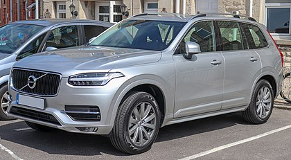

The Volvo XC90 is a three-row mid-size luxury crossover SUV manufactured and marketed by Volvo Cars since 2002 and now in its second generation.

The first generation was introduced at the 2002 North American International Auto Show and used the Volvo P2 platform shared with the first generation Volvo S80 and other large Volvo cars.